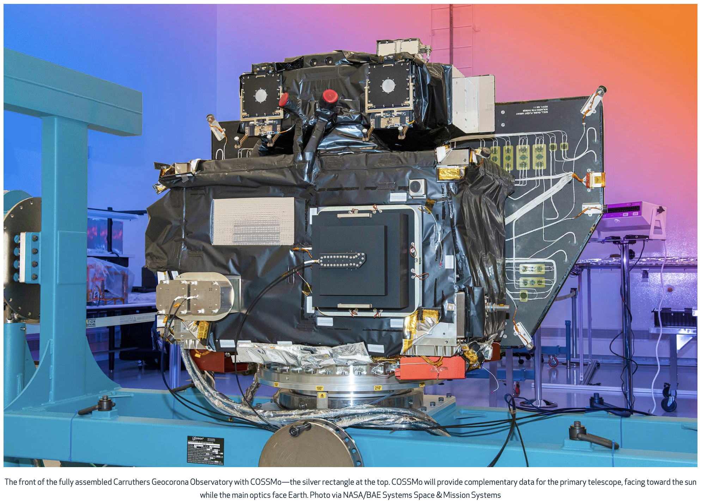

While at BU, I got the opportunity to work in two amazing research labs on campus and an undergraduate research assistant. The first lab I joined was BU's Space Physics & Technology Lab. Here, I helped develop and refine data pipelines to parse and analyze ultraviolet and soft X-ray telemetry from the COSSMo (Carruthers Observatory Student Solar Monitor) instrument on NASA’s Carruthers Geocorona Observatory in order to study solar activity in Earth’s outer atmosphere. Along with the talented researchers and scientists in lab, I'm currently waiting on the publication of the following paper: “The Carruthers Observatory Student Solar Monitor (COSSMo).” Co-author. Space Science Reviews (Springer Nature), under review, 2026.
I also later joined BU's Soft Robotics Control Lab where I assisted in the development and maintenance of software for precise motion in soft robotic systems. Our team is also currently in the review process for the following paper: Pacheco Garcia, J., Dickson, A. K., Jing, R., Liu, B., Stokes, S., Van Hook, C., Anderson, M. L., & Sabelhaus, A. P. “SRCBench: A Framework for Benchmarking Feedback Controllers in Soft Robotics.” Advanced Intelligent Systems (Wiley), under review, 2026.